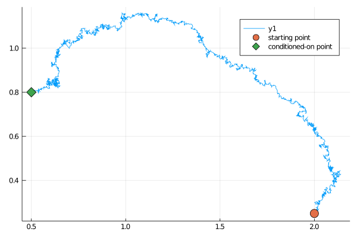

Defining guided proposals
The main object used to define guided proposals is
GuidedProposals.GuidProp — Typestruct GuidProp{
K,DP,DW,SS,R,R2,O,AO,S,T
} <: DiffusionDefinition.DiffusionProcess{K,DP,DW,SS}
P_target::R
P_aux::R2
obs::O
aux_obs::AO
guiding_term_solver::S
endStruct defining guided proposals of M Schauer, F van der Meulen and H van Zanten. See Mider M, Schauer M and van der Meulen F "Continuous-discrete smoothing of diffusions" (2020) for a comprehensive overview of the mathematics behind this object. It computes and stores the guiding term ∇logρ and allows for simulation of guided proposals and computation of their likelihood.
GuidProp(
tt,
P_target::R,
P_aux_type::Type{TR2},
obs::O,
solver_choice=(
solver=Tsit5(),
ode_type=:HFc,
convert_to_HFc=false,
mode=:inplace,
gradients=false,
eltype=Float64,
),
next_guided_prop=nothing,
artifical_noise=1e-11,
) where {
R<:DD.DiffusionProcess,
TR2<:DD.DiffusionProcess,
O<:OBS.Observation
}Default constructor. P_target and P_aux are the target and the type of the auxiliary diffusion laws respectively, tt is the time-grid on which ∇logρ needs to be computed. obs is the terminal observation (and the only one on the interval (tt[1], tt[end]]). solver_choice specifies the type of ODE solver that is to be used for computations of ∇logρ ( it is a NamedTuple, where solver specifies the algorithm for solving ODEs (see the documentation of DifferentialEquations.jl for possible choices), ode_type picks the ODE system (between :HFc, :MLμ and :Pν), convert_to_HFc indicates whether to translate the results of M,L,μ solver to H,F,c objects, mode is a flag indicating the way in which data is being handled: - :inplace: uses regular arrays to store the data (requires functions B!, β!, σ! and a! to be defined) - :outofplace: operates on static arrays - :gpu: operates on GPU arrays [TODO not implemented yet] gradients is a flag indicating whether automatic differentiation is to be employed and eltype indicates the data-type of each container's member. ) Finally, next_guided_prop is the guided proposal for the subsequent inter-observation interval. artifical_noise is only used for blocking, in conjuction with the field aux_obs, which holds an auxiliary observation. The former denotes the level of artificial noise that needs to be added on to an otherwise exact observation. The latter field is used for holding the said observation.
The main role of this object is to facilitate sampling of diffusion paths from some target diffusion law by:
- drawing from a
proposaldiffusion law & - computing an importance sampling weight
Performing these two steps in a setting of importance sampling or mcmc sampling makes it possible to draw sample-paths from the target law.
From the conceptual point of view, the target and auxiliary laws, as well as the terminal observations are all required to define a guided proposal. However, conceptually, guided proposals are defined as continuous-time processes, and thus, it should be possible to look-up the value of any sampled trajectory at any time $t\in[0,T]$. tt— the time grid on which the path is to be revealed—is thus conceptually superfluous at the time of initialization. Nonetheless, for the purposes that this package was created fixing a time-grid tt at initialization of any GuidProp is helpful in reducing the computational cost of the algorithm. Currently, if sampling on finer grid is needed at any point, then GuidProp object needs to be redefined.
Defining the target law
To define the target law we should make use another package from the JuliaDiffusionBayes suite: DiffusionDefinition.jl. We can either define the target law using the macro @define_diffusion or—if we can—simply load in a pre-defined processes.
using DiffusionDefinition
const DD = DiffusionDefinition
@load_diffusion LotkaVolterra # for constructing the target law
θ = [2.0/3.0, 4.0/3.0, 1.0, 1.0, 0.2, 0.2]
P_target = LotkaVolterra(θ...)Defining the auxiliary law
When we pass the auxiliary law to GuidProp we pass only the name of a struct that defines it and not the actual instance of it. The object will be initialized internally by GuidProp. For this reason, the following convention MUST be adhered to:
- the auxiliary law is limited to having the same parameter names as the target law; internally
GuidPropcycles through all parameters needed by the auxiliary law and looks for the corresponding entry in the target law and uses values of the corresponding parameters found there. Importantly, the association is done by name - in addition to parameters the auxiliary law is expected to have the following fields of the type
:auxiliary_info::t0:T:vT
Additionally, the field :xT will be defined automatically and (if need be) auto-initialized (but can also be declared explicitly).
No other field from :auxiliary_info (apart from explicitly declaring :xT) can be used (i.e. fields :v0 and :x0). This last restriction will probably be relaxed in the near future.
@load_diffusion LotkaVolterraAuxDefining the terminal observation
To define the terminal observation we should make use of another package from the JuliaDiffusionBayes.jl suite: ObservationSchemes.jl.
Let's initialize an observation sampled according to a scheme: $ v=X+\eta,\quad \eta\sim N(0,I). $
using ObservationSchemes, StaticArrays
t, xₜ = 3.0, @SVector [0.5, 0.8]
obs = LinearGsnObs(t, xₜ; Σ=1e-4*SDiagonal{2,Float64}(I))Initializing GuidProp
It is now possible to define GuidProp. We may specify the time-grid, and then, leave the remaining parameters at their defaults. At initialization time a sequence of computations is performed that derive a guiding term for t's lying on a pre-specified time-grid tt, as well as some additional quantities that are needed for computations of the log-likelihoods.
dt = 0.001
tt = 0.0:dt:t
P = GuidProp(tt, P_target, LotkaVolterraAux, obs)If at any point the parameters change, then the guiding term might need to be re-computed (in fact, this is the centerpiece of the backward filtering part of the forward filtering-backward guiding algorithm). We provide certain utility functions that facilitate these operations. See ... for more details.
Additional set of options passed to GuidProp are specified in the field solver_choice, which by default is set to:
solver_choice=(
solver=Tsit5(),
ode_type=:HFc,
convert_to_HFc=false,
mode=:outofplace,
gradients=false,
eltype=Float64,
)The constructor expects it to be a NamedTuple with the respective fields (but it is robust enough to fill-in any missing fields with defaults). The meaning of the fields is as follows:
solveris passed toDifferentialEquations.jlto pick an algorithm for solving ODEs that define the guiding term. More about the ODE systems is written in ODE types.ode_typeis used to pick between three choices of ODE systems to use:H,F,csystem,M,L,μsystem andP,ν(andc, butcneeds to be added to names). They have the labels::HFc,MLμ,Pνrespectively, which are not case sensitive and currently onlyHFcis implemented)convert_to_HFcis used only when:MLμhas been chosen to be a solver of ODEs. In that scenario, ifconvert_to_HFcis set totrue, then the termsM,L,μthat the ODE systems solve for will be used to compute the correspondingH,F,cterms (as opposed to using:HFcsolver to solve for them)modeis an important flag (currently only:outofplaceis fully supported) and it is used to tellGuidPropwhat type of computations are being performed: out-of-place:outofplace, which are based onSVectors from StaticArrays.jl, in-place:inplace, which are based onVectors or:gpu, which are based oncuArrays.gradientsis another important flag for tellingGuidPropwhether gradients with respect to something need to be computed.eltypeignore this for a moment, we need to figure some things out with this...
Sampling guided proposals
Once GuidProp has been initialized, trajectories of guided proposals may be sampled from it.
Base.rand — FunctionBase.rand(
[rng::Random.AbstractRNG], P::GuidProp, y1=zero(P); f=DD.__DEFAULT_F
)Sample a trajectory of a guided proposal P started from y1. Initialize containers in the background and compute the functional f at the time of sampling.
Base.rand(
[rng::Random.AbstractRNG],
PP::AbstractArray{<:GuidProp}, y1=zero(PP[1]); f=DD.__DEFAULT_F
)Sample a trajectory started from y1, defined for multiple guided proposals PP that correspond to consecutive intervals. Initialize containers in the background and compute the functionals f (one for each interval) at the time of sampling.
Random.rand! — FunctionRandom.rand!(
[rng::Random.AbstractRNG],
P::GuidProp,
X, W, y1=zero(P);
f=DD.__DEFAULT_F, Wnr=Wiener()
)Sample a trajectory of a guided proposal P started from y1. Use containers X and W to save the results. Compute the functional f at the time of sampling.
Random.rand!(
[rng::Random.AbstractRNG],
P::GuidProp,
X°, W°, W, ρ, y1=zero(P);
f=DD.__DEFAULT_F, Wnr=Wiener()
)Sample a trajectory of a guided proposal P started from y1. Use containers X° and W° to save the results. Use a preconditioned Crank-Nicolson scheme with memory parameter ρ and a previously sampled Wiener noise W. Compute the functional f at the time of sampling.
Random.rand!(
[rng::Random.AbstractRNG]
P::GuidProp,
X, W, v::Val{:ll}, y1=zero(P);
Wnr=Wiener()
)Sample a trajectory of a guided proposal P started from y1. Use containers X and W to save the results. Compute log-likelihood (only path contribution) along the way.
Random.rand!(
[rng::Random.AbstractRNG]
P::GuidProp,
X°, W°, W, ρ, v::Val{:ll}, y1=zero(P);
Wnr=Wiener()
)Sample a trajectory of a guided proposal P started from y1. Use containers X° and W° to save the results. Use a preconditioned Crank-Nicolson scheme with memory parameter ρ and a previously sampled Wiener noise W. Compute log-likelihood (only path contribution) along the way.
Random.rand!(
[rng::Random.AbstractRNG]
PP::AbstractArray{<:GuidProp},
XX, WW, y1=zero(PP[1]);
f=DD.__DEFAULT_F, f_out=DD.__DEFAULT_F, Wnr=Wiener()
)Sample a trajectory started from y1 over multiple intervals for guided proposals PP that correspond to consecutive intervals. Use containers XX and WW to save the results. Compute the functionals f (one for each interval) at the time of sampling and store the results in f_out.
Random.rand!(
[rng::Random.AbstractRNG]
PP::AbstractArray{<:GuidProp},
XX°, WW°, WW, ρρ, y1=zero(PP[1]);
f=DD.__DEFAULT_F, f_out=DD.__DEFAULT_F, Wnr=Wiener()
)Sample a trajectory started from y1 over multiple intervals for guided proposals PP that correspond to consecutive intervals. Use containers XX° and WW° to save the results. Use a preconditioned Crank-Nicolson scheme with memory parameters ρρ (one for each interval) and a previously sampled Wiener noise WW. Compute the functionals f (one for each interval) at the time of sampling and store the results in f_out.
Random.rand!(
[rng::Random.AbstractRNG]
PP::AbstractArray{<:GuidProp},
XX, WW, v::Val{:ll}, y1=zero(PP[1]);
Wnr=Wiener()
)Sample a trajectory started from y1 over multiple intervals for guided proposals PP that correspond to consecutive intervals. Use containers XX° and WW° to save the results. Compute log-likelihood (path contribution AND end-points contribution) along the way.
Random.rand!(
[rng::Random.AbstractRNG]
PP::AbstractArray{<:GuidProp},
XX°, WW°, WW, ρρ, v::Val{:ll}, y1=zero(PP[1]);
Wnr=Wiener()
)Sample a trajectory started from y1 over multiple intervals for guided proposals PP that correspond to consecutive intervals. Use containers XX° and WW° to save the results. Use a preconditioned Crank-Nicolson scheme with memory parameters ρρ (one for each interval) and a previously sampled Wiener noise WW. Compute log-likelihood (path contribution AND end-points contribution) along the way.
Sampling a single trajectory
To sample a single trajectory and initialize appropriate containers in the background call rand. Note that rand returns two containers (one for the underlying process: X and another for the Wiener process: W) and a flag for sampling Wiener process Wnr. X, W and Wnr may then be used with rand! for re-sampling without having to allocate any additional memory.
x0 = @SVector [2.0, 0.25]
X, W, Wnr = rand(P, x0)
plot(X, Val(:x_vs_y))
scatter!([y1[1]],[y1[2]], markersize=8, label="starting point")
scatter!([vT[1]],[vT[2]], marker=:diamond, markersize=8, label="conditioned-on point")
Alternatively, you may choose to be more explicit: initialize the containers yourself and then call rand!. Note however that if the diffusion's state space is not $\RR^d$ you might need to keep re-sampling to make sure the conditions are satisfied.
# initialize containers
X, W = trajectory(P)
# sample the process
success = false
while !success
success, _ = rand!(P, X, W, x0; Wnr=Wiener())
endSampling multiple trajectories
Of course, sampling a single trajectory of a guided proposal is usually not the end-goal. We are instead interested in sampling from the target law. To this end we need to not only sample paths, but also compute their log-likelihoods. This can be done in three ways.
- First, you may simply call
loglikhdafter the path has been sampled to compute the log-likelihood for it - Second, just as in DiffusionDefinition.jl
randandrand!accept a named argumentfwhich computes path functionals when sampling. A function that computes the log-likelihood may be passed there. - Third—a preferable method—you may call versions of
rand!that have optimized versions of log-likelihood computations implemented for them.
success, ll = rand!(P, X, W, Val(:ll), x0; Wnr=Wiener())ll returned by rand! is not exactly log-likelihood for the path XX and one needs to be careful what is the meaning of it. Consult the section on log-likelihoods to find out more.
With these functions we may very easily perform smoothing to obtain samples under the target law:
function simple_smoothing(P, y1)
X, W, Wnr = rand(P, y1)
X°, W° = trajectory(P)
ll = loglikhd(P, X)
paths = []
for i in 1:10^4
_, ll° = rand!(P, X°, W°, Val(:ll), y1; Wnr=Wnr)
if rand() < exp(ll°-ll)
X, W, X°, W° = X°, W°, X, W
ll = ll°
end
i % 400 == 0 && append!(paths, [deepcopy(X)])
end
paths
end
paths = simple_smoothing(P, y1)which results in
using Plots, Colors
cm = colormap("RdBu")
kwargs = (alpha=0.3, label="")
p = plot(paths[1], Val(:x_vs_y); color=cm[1], kwargs...)
for (i,x) in enumerate(paths[2:end])
plot!(p, x, Val(:x_vs_y); color=cm[4*i], kwargs...)
end
display(p)Preconditioned Crank–Nicolson scheme
To use the Crank–Nicolson scheme pass additional parameters W (the previously accepted Wiener noise) and ρ (the memory parameter of the preconditioned Crank–Nicolson scheme to a rand! function):
X°, W° = trajectory(P)
ρ = 0.7
success, ll° = rand!(P, X°, W°, W, ρ, Val(:ll), y1; Wnr=Wnr)